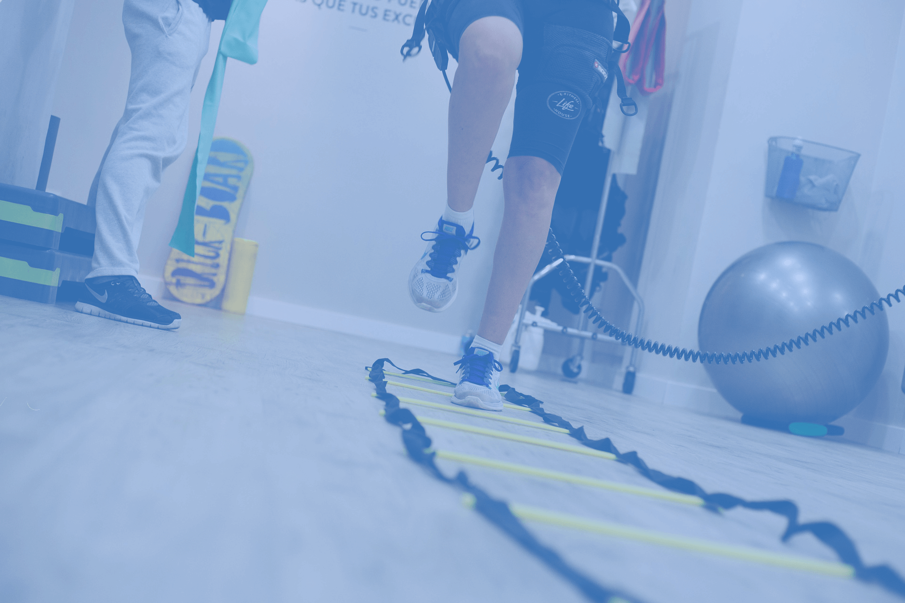
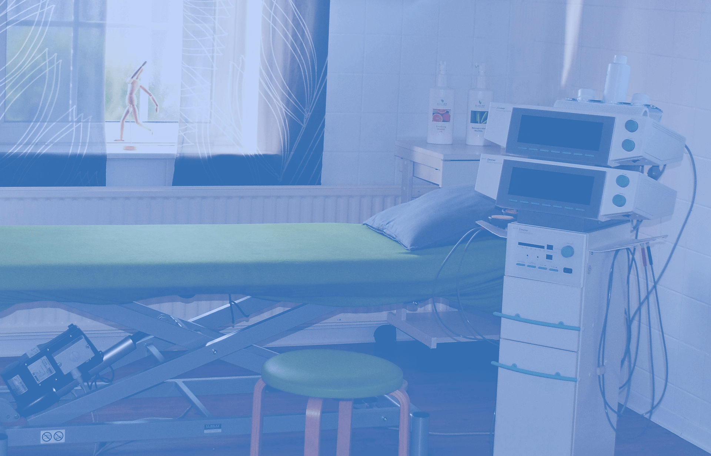

Body balance
Nowoczesne terapie
Spersonalizowany plan leczenia wykorzystujący najnowsze technologie

Body balance
Zwalczanie przyczyny
Skupiamy się nie tylko na dolegliwościach ale również na przyczynach

Body balance
Profesionalny gabinet
Profesionalny gabinet wyposażony w najnowszy sprzęt
Zobacz więcej